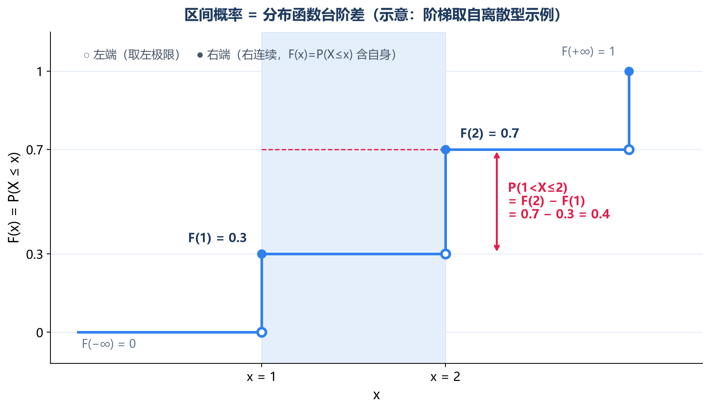
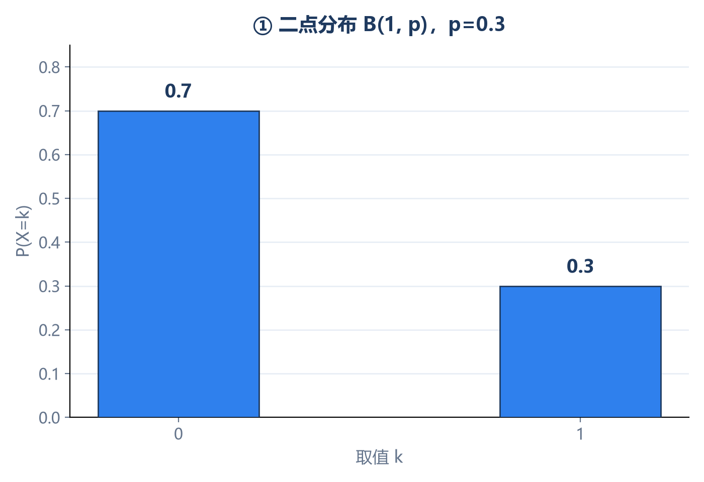
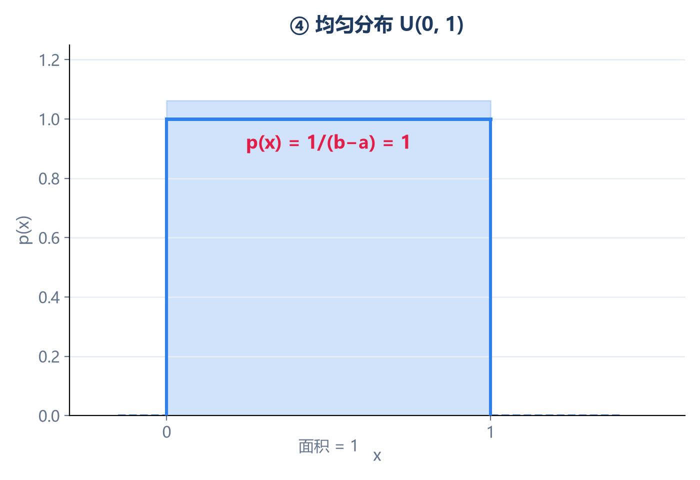
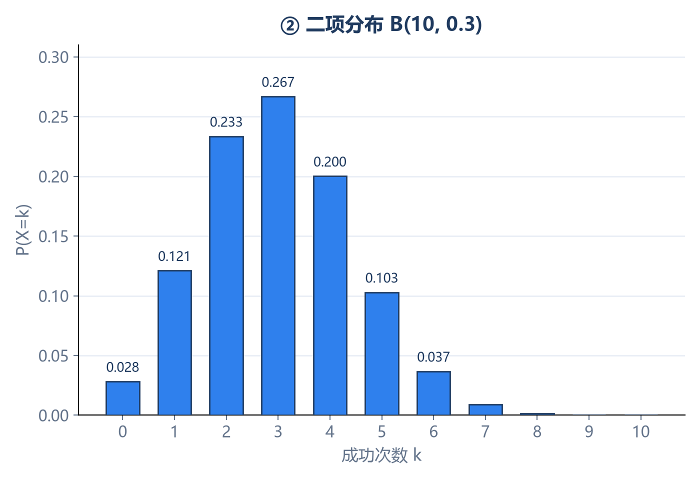
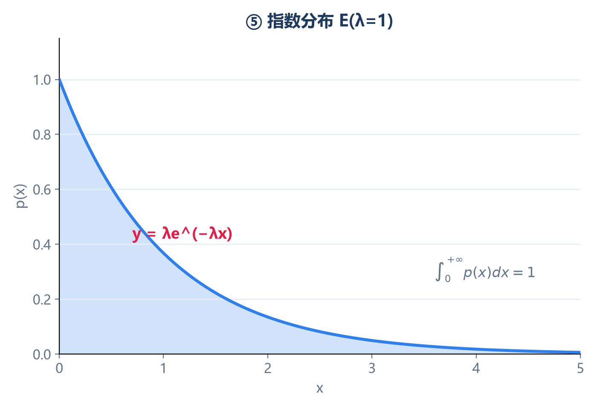
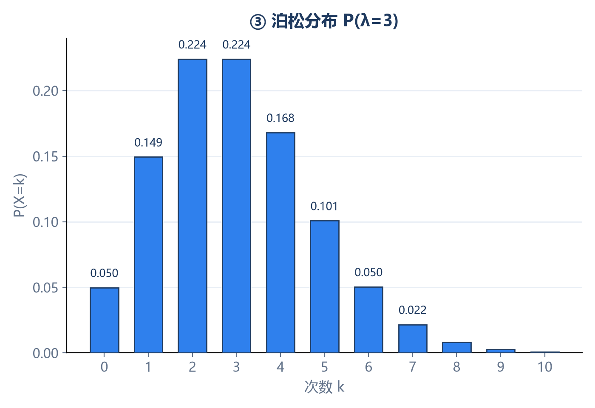
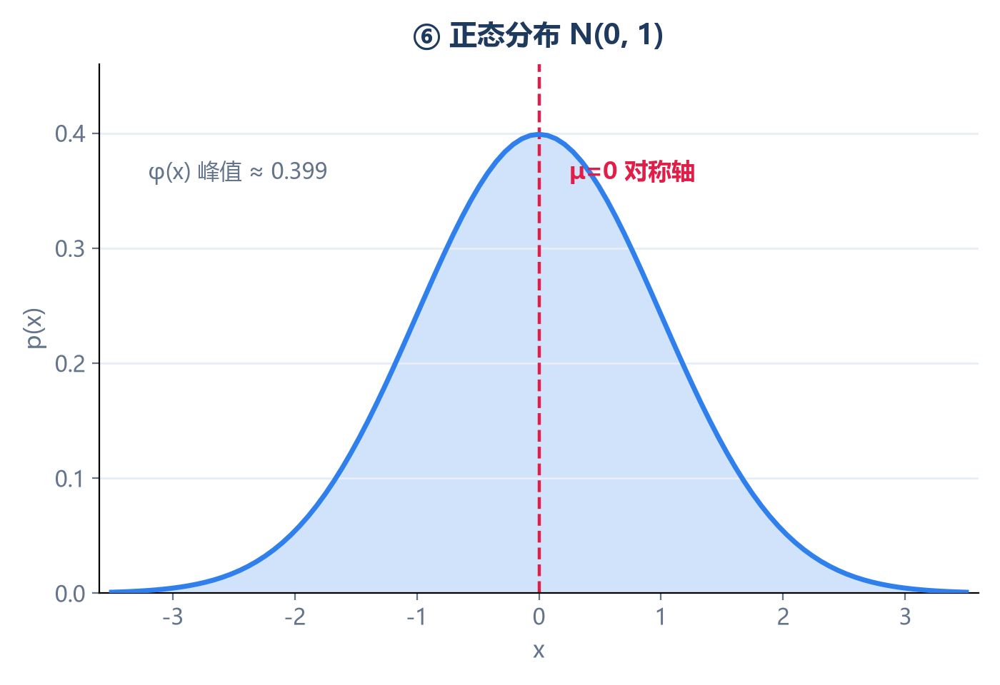
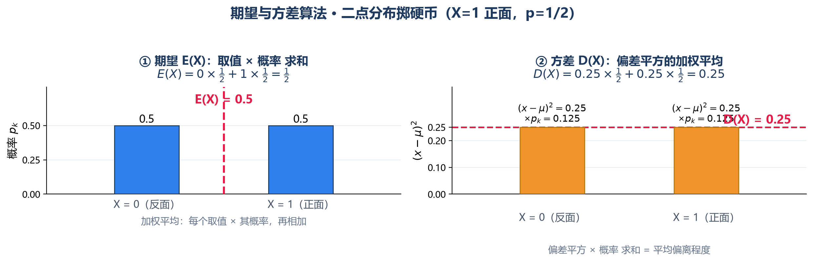
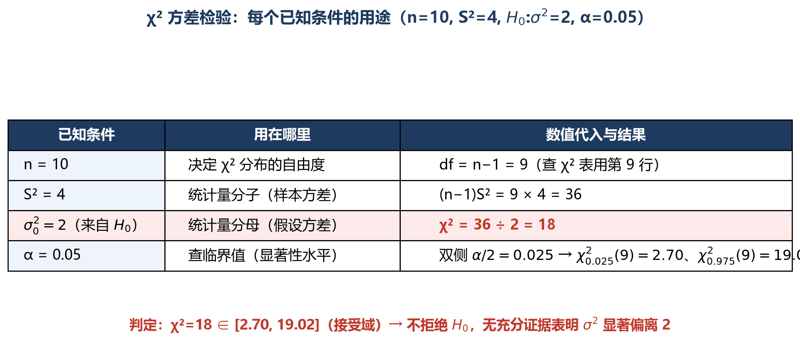
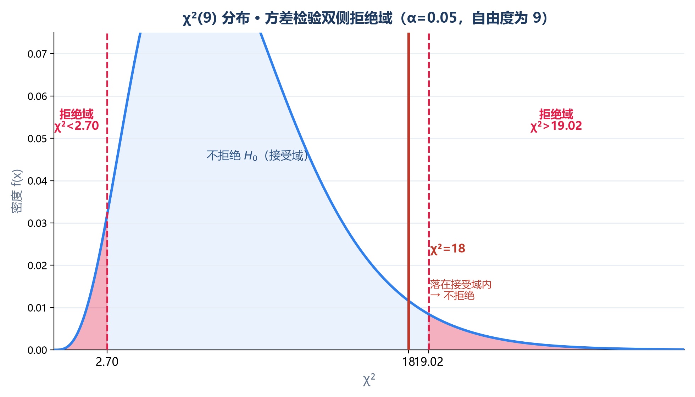

<!DOCTYPE html>
<html lang="zh-CN">
<head>
<meta charset="UTF-8">
<title>概率论与数理统计 · 复习笔记（含例题讲解）</title>
<link rel="stylesheet" href="https://cdn.jsdelivr.net/npm/katex@0.16.9/dist/katex.min.css">
<script src="https://cdn.jsdelivr.net/npm/katex@0.16.9/dist/katex.min.js"></script>
<script src="https://cdn.jsdelivr.net/npm/katex@0.16.9/dist/contrib/auto-render.min.js"></script>
<script src="https://cdn.jsdelivr.net/npm/marked@12.0.2/marked.min.js"></script>
<style>
  body {
    margin: 0; padding: 0;
    font-family: -apple-system, "Segoe UI", "Microsoft YaHei", "PingFang SC", sans-serif;
    background: #f5f7fa; color: #2c3e50; line-height: 1.8;
  }
  .container {
    max-width: 880px; margin: 0 auto; padding: 40px 32px 80px;
    background: #fff; box-shadow: 0 0 24px rgba(0,0,0,.06); min-height: 100vh;
  }
  h1 { font-size: 26px; color: #1f3a5f; border-bottom: 3px solid #2f80ed; padding-bottom: 10px; margin-top: 0; }
  h2 { font-size: 20px; color: #1f3a5f; margin-top: 36px; padding-left: 10px; border-left: 4px solid #2f80ed; }
  h3 { font-size: 16px; color: #2c5282; margin-top: 24px; }
  blockquote {
    margin: 14px 0; padding: 10px 16px;
    background: #fff8e6; border-left: 4px solid #f0b400;
    border-radius: 0 6px 6px 0; color: #6b5400;
  }
  table { border-collapse: collapse; width: 100%; margin: 14px 0; font-size: 14px; }
  th, td { border: 1px solid #d9e2ec; padding: 8px 10px; text-align: left; }
  th { background: #eaf2ff; color: #1f3a5f; font-weight: 600; }
  tr:nth-child(even) td { background: #f8fafc; }
  code {
    background: #f1f5f9; padding: 2px 6px; border-radius: 4px;
    font-family: "Consolas", monospace; font-size: 13px; color: #c0392b;
  }
  pre {
    background: #1e293b; color: #e2e8f0; padding: 16px; border-radius: 8px;
    overflow-x: auto; font-size: 13px; line-height: 1.6;
  }
  pre code { background: transparent; color: inherit; padding: 0; }
  strong { color: #c0392b; }
  hr { border: none; border-top: 1px dashed #cbd5e0; margin: 28px 0; }
  ul, ol { padding-left: 24px; }
  li { margin: 4px 0; }
  /* 六大分布图像网格 */
  .dist-grid { display: grid; grid-template-columns: 1fr 1fr; gap: 14px; margin: 16px 0; }
  .dist-grid figure { margin: 0; background: #fafcff; border: 1px solid #e3ecf7; border-radius: 8px; padding: 8px 8px 6px; }
  .dist-grid figcaption { text-align: center; font-size: 13px; color: #2c5282; margin-top: 4px; font-weight: 600; }
  .dist-grid svg { width: 100%; height: auto; display: block; }
  .dist-grid img { width: 100%; height: auto; display: block; }
  .katex { font-size: 1.05em; }
  .footer { text-align: center; color: #94a3b8; font-size: 12px; margin-top: 40px; }

  /* 例题块 */
  .ex {
    background: #eef6ff; border: 1px solid #b3d4fc; border-radius: 8px;
    padding: 12px 16px; margin: 12px 0;
  }
  .ex .tag {
    display: inline-block; background: #2f80ed; color: #fff;
    font-size: 12px; padding: 2px 10px; border-radius: 10px; margin-bottom: 6px;
  }
  /* 讲解块 */
  .tip {
    background: #fff5e6; border-left: 4px solid #e67e22;
    padding: 10px 14px; margin: 10px 0; border-radius: 0 6px 6px 0;
    color: #7a4a12; font-size: 14px;
  }
  .tip b { color: #c0392b; }
  /* 解析块 */
  .sol {
    background: #eefaf0; border-left: 4px solid #27ae60;
    padding: 12px 16px; margin: 12px 0; border-radius: 0 6px 6px 0;
    color: #1e4d2b; font-size: 14px; line-height: 1.9;
  }
  .sol b { color: #c0392b; }
  .sol ul { margin: 6px 0 2px; }
  /* 例题图表容器 */
  .chart-box {
    margin: 12px 0; border: 1px solid #e3ecf7; border-radius: 8px;
    padding: 8px; background: #fafcff;
  }
  .chart-box .cap {
    text-align: center; font-size: 13px; color: #2c5282;
    margin-top: 4px; font-weight: 600;
  }
</style>
</head>
<body>
<div class="container">
  <div id="content"></div>
  <div class="footer">依据教材 1.7 节整理 · 每个知识点配最简例题与通俗讲解</div>
</div>

<script type="text/plain" id="md-source">
# 概率论与数理统计 · 复习笔记（含例题讲解）

> 依据：《注册电气工程师公共基础考试复习教程》天津大学编委会 · 1.7 节
> 每个知识点配一道最简例题 + 通俗讲解，数字都很小，先理解再记公式。

---

## 一、随机事件与概率（1.7.1）

### 1.1 基本概念

- **随机事件**：可能发生也可能不发生的事，记作 $A,B,C$。
- **概率**：事件发生可能性大小，$0\le P(A)\le1$。
- 必然事件 $\Omega$：$P(\Omega)=1$；不可能事件 $\Phi$：$P(\Phi)=0$。

<div class="ex"><span class="tag">例</span>掷一枚均匀骰子，事件 $A=$"点数为 3"，求 $P(A)$。

**解**：共 6 个等可能结果，$A$ 含 1 个，$P(A)=\dfrac{1}{6}$。</div>

<div class="tip"><b>讲解</b>：概率就是"可能性大小"的数字。骰子 6 个面一样重，每个面就是 $1/6$。必然发生是 1，不可能发生是 0，中间都是 0 到 1 之间。</div>

### 1.2 事件的运算

| 运算 | 记号 | 含义 |
|---|---|---|
| 对立 | $\bar A$ | $A$ 不发生 |
| 和事件 | $A+B=A\cup B$ | 至少一个发生 |
| 积事件 | $AB=A\cap B$ | 同时发生 |
| 差事件 | $A-B=A\bar B$ | $A$ 发生但 $B$ 不发生 |

<div class="ex"><span class="tag">例</span>$A=$"明天下雨"，$B=$"明天刮风"。问 $A+B$、$AB$、$A-B$、$\bar A$ 各是什么？

**解**：$A+B=$"下雨或刮风（至少一样）"；$AB=$"又下雨又刮风"；$A-B=$"下雨但不刮风"；$\bar A=$"不下雨"。</div>

<div class="tip"><b>讲解</b>：事件运算就是集合运算——画两个圆圈（韦恩图），"或"是两块合并，"且"是重叠部分，"差"是有我没你，"横杠"是圈外。一眼就懂。</div>

### 1.3 事件的关系

- 包含 $A\subset B$、相等 $A=B$、互斥 $AB=\Phi$、对立 $\bar A=B$、完备事件组、独立 $P(AB)=P(A)P(B)$。

<div class="ex"><span class="tag">例</span>掷骰子，$A=$"出 1 点"，$B=$"出 2 点"。$A$ 与 $B$ 互斥吗？独立吗？

**解**：$AB=\Phi$，互斥；但 $P(AB)=0\ne P(A)P(B)=\frac{1}{36}$，<b>不独立</b>。</div>

<div class="tip"><b>讲解</b>：互斥="不能同时发生"，独立="互不影响"。互斥的事件一般<b>不</b>独立——因为知道 $A$ 发生了，立刻知道 $B$ 没发生，影响很大。</div>

### 1.4 德摩根律

$$\overline{A+B}=\bar A\,\bar B, \qquad \overline{AB}=\bar A+\bar B$$

<div class="ex"><span class="tag">例</span>说"他又高又帅是假的"，等于什么？

**解**：$\overline{AB}=\bar A+\bar B$，即"他不高 <b>或</b> 他不帅"。</div>

<div class="tip"><b>讲解</b>：否定"(且)"变成"(或)"，否定"(或)"变成"(且)"。就像数学里负号进括号要变号。</div>

### 1.5 条件概率

$$P(B\mid A)=\frac{P(AB)}{P(A)},\quad P(A)>0$$

<div class="ex"><span class="tag">例</span>袋中 3 红 2 白，不放回抽两次。已知第一次抽到红球，求第二次也抽到红球。

**解**：第一次抽走红球后剩 2 红 2 白，$P=2/4=\dfrac{1}{2}$。</div>

<div class="tip"><b>讲解</b>：条件概率就是"世界缩小了"——已知 $A$ 发生，分母就从全部结果变成 $A$ 的结果。不放回抽样就是"摸走一个不还"。</div>

### 1.6 概率六大公式（必考）

| 名称 | 公式 |
|---|---|
| 求逆 | $P(\bar A)=1-P(A)$ |
| 加法 | $P(A+B)=P(A)+P(B)-P(AB)$ |
| 乘法 | $P(AB)=P(A)P(B\mid A)$ |
| 求差 | $P(A-B)=P(A)-P(AB)$ |
| 全概率 | $\displaystyle P(B)=\sum_i P(A_i)P(B\mid A_i)$ |
| 贝叶斯 | $\displaystyle P(A_i\mid B)=\frac{P(A_i)P(B\mid A_i)}{\sum_j P(A_j)P(B\mid A_j)}$ |

<div class="ex"><span class="tag">例·加法</span>$P(A)=0.6,\ P(B)=0.5,\ P(AB)=0.3$，求 $P(A\cup B)$。

**解**：$0.6+0.5-0.3=0.8$。</div>

<div class="tip"><b>讲解</b>：为什么要减 $P(AB)$？因为重叠部分被加了两次，像两个圆面积和要减去重叠。</div>

<div class="ex"><span class="tag">例·全概率+贝叶斯</span>机器正常时合格率 90%，故障时 30%；机器故障概率 25%。求产品合格率；若首件合格，求机器正常的概率。

**解**：$P(B)=0.75\times0.9+0.25\times0.3=0.75$；$P(A\mid B)=\dfrac{0.75\times0.9}{0.75}=0.9$。</div>

<div class="tip"><b>讲解</b>：<b>全概率是"原因→结果"</b>——分情况汇总（正常/故障各贡献多少合格率）。<b>贝叶斯是"结果→原因"</b>——看到结果反推最可能是哪个原因（就像医生看症状反推病）。</div>

---

## 二、古典概型（1.7.2）

### 2.1 古典概率

$$P(A)=\frac{m}{n}$$

<div class="ex"><span class="tag">例</span>从 1,2,3,4,5 中任取一数，求取到奇数的概率。

**解**：奇数 1,3,5 共 3 个，$P=\dfrac{3}{5}=0.6$。</div>

<div class="tip"><b>讲解</b>：古典概型两个条件：结果有限 + 等可能。满足就能"数着算"。</div>

### 2.2 超几何概率（不放回）

$$P(A)=\frac{C_M^k\,C_{N-M}^{\,n-k}}{C_N^n}$$

<div class="ex"><span class="tag">例</span>10 件产品中 3 件次品，任取 2 件，求取到 1 件次品的概率。

**解**：$P=\dfrac{C_3^1 C_7^1}{C_{10}^2}=\dfrac{21}{45}=\dfrac{7}{15}$。</div>

<div class="tip"><b>讲解</b>："不放回"地抽，知道总体里好坏各多少，直接套组合数公式。</div>

### 2.3 二项概率（独立重复）

$$P(A)=C_n^k p^k(1-p)^{n-k}$$

<div class="ex"><span class="tag">例</span>抛均匀硬币 3 次，求恰好 2 次正面。

**解**：$P=C_3^2(1/2)^2(1/2)=\dfrac{3}{8}$。</div>

<div class="tip"><b>讲解</b>：独立重复 $n$ 次，每次成功概率 $p$，求成功 $k$ 次。硬币每次独立，正好套用。</div>

---

## 三、一维随机变量及其分布（1.7.3）

### 3.1 三种描述工具

| 类型 | 适用 | 定义 |
|---|---|---|
| 分布律 | 离散 | $P(X=x_k)=p_k$，$\sum p_k=1$ |
| 密度 $p(x)$ | 连续 | $p(x)\ge0$，$\int p(x)dx=1$ |
| 分布函数 $F(x)$ | 通用 | $F(x)=P(X\le x)$ |

<div class="ex"><span class="tag">例</span>$X$ 分布律：$P(X=1)=0.2,\ P(X=2)=a,\ P(X=3)=0.5$，求 $a$。

**解**：$a=1-0.2-0.5=0.3$。</div>

<div class="tip"><b>讲解</b>：所有概率加起来必须等于 1——这是"概率守恒"。这是求未知参数的第一招。</div>

### 3.2 分布函数 $F(x)$ 四性质

有界 $0\le F(x)\le1$、单调不减、右连续、$F(-\infty)=0,\ F(+\infty)=1$。

<div class="ex"><span class="tag">例</span>已知 $F(1)=0.3,\ F(2)=0.7$，求 $P(1<X\le2)$。

**解**：$P=F(2)-F(1)=0.4$。</div>

<div class="tip"><b>讲解</b>：分布函数像一个从 0 爬到 1 的楼梯，$F(x)$ 就是"到 $x$ 为止累计了多少概率"。区间概率 = 两个台阶差。</div>

<p align="center"></p>

### 3.3 六大常用分布（必背 E、D）

| 分布 | 记号 | $E(X)$ | $D(X)$ |
|---|---|---|---|
| 二点 | $B(1,p)$ | $p$ | $p(1-p)$ |
| 二项 | $B(n,p)$ | $np$ | $np(1-p)$ |
| 泊松 | $P(\lambda)$ | $\lambda$ | $\lambda$ |
| 均匀 | $U(a,b)$ | $(a+b)/2$ | $(b-a)^2/12$ |
| 指数 | $E(\lambda)$ | $1/\lambda$ | $1/\lambda^2$ |
| 正态 | $N(\mu,\sigma^2)$ | $\mu$ | $\sigma^2$ |


**六大常用分布图像**（参数示例：二点 p=0.3、二项 n=10 p=0.3、泊松 λ=3、均匀 U(0,1)、指数 λ=1、正态 N(0,1)）

<div class="dist-grid">
<figure><figcaption>① 二点分布 B(1, p)</figcaption>

</figure>
<figure><figcaption>④ 均匀分布 U(a, b)</figcaption>

</figure>
<figure><figcaption>② 二项分布 B(n, p)</figcaption>

</figure>
<figure><figcaption>⑤ 指数分布 E(λ)</figcaption>

</figure>
<figure><figcaption>③ 泊松分布 P(λ)</figcaption>

</figure>
<figure><figcaption>⑥ 正态分布 N(μ, σ²)</figcaption>

</figure>
</div>


<div class="ex"><span class="tag">例·二点</span>掷一次硬币，$X=1$ 表正面。求 $E(X),D(X)$。

**解**：$p=1/2$，$E=1/2$，$D=1/4$。</div>

<div class="tip"><b>讲解</b>：二点分布就是"一次试验，成功 1 失败 0"，最简单的分布。</div>

<p align="center"></p>

<div class="ex"><span class="tag">例·二项</span>射击命中率 0.8，独立射 5 次，恰好命中 4 次？

**解**：$P=C_5^4(0.8)^4(0.2)^1=0.4096$；$E=np=4$，$D=np(1-p)=0.8$。</div>

<div class="tip"><b>讲解</b>：二项 = n 次伯努利成功次数。期望就是"平均中几枪"。</div>

<div class="ex"><span class="tag">例·泊松</span>某路口平均每分钟过 2 辆车，求某分钟过 3 辆的概率。

**解**：$P(X=3)=e^{-2}\cdot 2^3/3!\approx0.180$。</div>

<div class="tip"><b>讲解</b>：泊松描述"单位时间稀有事件次数"，$\lambda$ 就是平均次数。<b>$E=D=\lambda$</b> 是它的标志。</div>

<div class="sol"><b>解析</b>：<br/>
<b>① 建模</b>：设 $X$ = 某分钟内通过路口的车辆数。平均每分钟 2 辆 ⟹ $\lambda=2$，即 $X\sim P(2)$，$P(X=k)=e^{-2}\cdot 2^k/k!\ (k=0,1,2,\dots)$。可用泊松的三个前提：各车独立通过、极短时间内同时过两辆及以上的概率可忽略、平均速率恒定。<br/>
<b>② 计算拆解</b>：$P(X=3)=e^{-2}\cdot\dfrac{2^3}{3!}=e^{-2}\cdot\dfrac{8}{6}\approx0.1353\times1.3333\approx0.1804\approx0.180$。<br/>
<b>③ 标志性质</b>：$E(X)=D(X)=\lambda=2$——期望=方差=λ 是泊松的"身份证"，可反推参数、判断分布；最可能取值（众数）在 λ 附近（λ=2 时 $k=1,2$ 并列最高，各约 0.271），但题目问"恰好 3 辆"，直接套公式。<br/>
<b>④ 易错变式</b>：<br/>
<ul>
<li><b>λ 随时间段伸缩</b>：若改问"3 分钟内至多 5 辆"，$\lambda'=2\times3=6$，求 $P(X'\le5)=\sum_{k=0}^{5}e^{-6}\cdot 6^k/k!$；</li>
<li><b>区间概率逐点累加</b>：$P(X\le3)\approx0.135+0.271+0.271+0.180=0.857$；</li>
<li><b>对立事件转化</b>：$P(X\ge1)=1-P(X=0)=1-e^{-2}\approx0.865$；</li>
<li><b>二项近似</b>：$n$ 大、$p$ 小且 $np=\lambda$ 时，$B(n,p)\approx P(\lambda)$。</li>
</ul></div>

| $k$（过车数） | 0 | 1 | 2 | 3 | 4 | 5 | 6 |
|---|---|---|---|---|---|---|---|
| $P(X=k)$ | 0.135 | 0.271 | 0.271 | **0.180** | 0.090 | 0.036 | 0.012 |

<div class="chart-box"><div id="poisson-chart" style="width:100%;height:340px;"></div><div class="cap">λ=2 时泊松分布概率柱状图：红色柱为所求 P(X=3)≈0.180，虚线为均值 E(X)=λ=2</div></div>

<div class="ex"><span class="tag">例·均匀</span>$X\sim U(0,10)$，求 $P(3<X<7)$。

**解**：长度比 $=(7-3)/(10-0)=0.4$。</div>

<div class="tip"><b>讲解</b>：均匀分布就是"区间里每个位置机会均等"，概率 = 区间长度之比。期望在中点。</div>

<div class="ex"><span class="tag">例·指数</span>$X\sim E(\lambda=0.1)$，求 $P(X>20)$。

**解**：$P(X>20)=e^{-0.1\times20}=e^{-2}\approx0.135$。</div>

<div class="tip"><b>讲解</b>：指数分布描述"等待时间"，有<b>无记忆性</b>——已经等了多久不影响还要等多久。</div>

<div class="ex"><span class="tag">例·正态</span>$X\sim N(2,9)$，求 $P(X<2)$。

**解**：$\mu=2$ 是对称中心，$P(X<2)=0.5$。</div>

<div class="tip"><b>讲解</b>：正态分布像一口钟，对称轴就是均值 $\mu$，左右各一半。</div>

### 3.4 正态标准化

$$Z=\frac{X-\mu}{\sigma}\sim N(0,1)$$

<div class="ex"><span class="tag">例</span>$X\sim N(10,4)$，求 $P(X<12)$。

**解**：$Z=(12-10)/2=1$，$P=\Phi(1)\approx0.8413$。</div>

<div class="tip"><b>讲解</b>：标准化就是"换尺子"——不管原来 $\mu,\sigma$ 是多少，都换成标准正态这把统一尺子，然后查 $\Phi$ 表。<b>线性函数仍正态</b>，考试常考。</div>

---

## 四、数字特征（1.7.3）

### 4.1 数学期望 $E(X)$

<div class="ex"><span class="tag">例</span>$X$ 分布律：$1(0.3),\ 2(0.5),\ 3(0.2)$，求 $E(X)$。

**解**：$E=1\times0.3+2\times0.5+3\times0.2=1.9$。</div>

<div class="tip"><b>讲解</b>：期望就是"加权平均"——每个值乘以它出现的概率，加起来。</div>

<div class="ex"><span class="tag">例·性质</span>$E(X)=3$，求 $E(2X+1)$。

**解**：$E(2X+1)=2\times3+1=7$。</div>

<div class="tip"><b>讲解</b>：期望是<b>线性</b>的——乘常数、加常数都直接作用。独立时还有 $E(XY)=E(X)E(Y)$。</div>

### 4.2 方差 $D(X)$

$$D(X)=E(X^2)-[E(X)]^2$$

<div class="ex"><span class="tag">例</span>$E(X)=2,\ E(X^2)=5$，求 $D(X)$。

**解**：$D(X)=5-2^2=1$。</div>

<div class="tip"><b>讲解</b>：方差衡量"波动大小"——数据离均值有多散。用 $E(X^2)-[E(X)]^2$ 最方便。</div>

<div class="ex"><span class="tag">例·性质</span>$D(X)=4$，求 $D(3X-2)$。

**解**：$D(3X-2)=3^2\times4=36$。</div>

<div class="tip"><b>讲解</b>：注意！乘进去是<b>平方</b>（$3^2=9$），但<b>加常数不影响方差</b>（$-2$ 不改变波动）。这是高频考点。</div>

---

## 五、协方差与相关系数（1.7.4）

### 5.3 协方差

$$\operatorname{Cov}(X,Y)=E(XY)-E(X)E(Y)$$

<div class="ex"><span class="tag">例</span>$E(XY)=10,\ E(X)=2,\ E(Y)=3$，求 $\operatorname{Cov}(X,Y)$。

**解**：$10-2\times3=4$。</div>

<div class="tip"><b>讲解</b>：协方差衡量"X 和 Y 是不是一起动"——正数一起涨，负数此消彼长，0 各干各的。</div>

### 5.4 相关系数

$$\rho=\frac{\operatorname{Cov}(X,Y)}{\sqrt{D(X)D(Y)}}$$

<div class="ex"><span class="tag">例</span>$\operatorname{Cov}=3,\ D(X)=4,\ D(Y)=9$，求 $\rho$。

**解**：$\rho=3/\sqrt{4\times9}=3/6=0.5$。</div>

<div class="tip"><b>讲解</b>：相关系数把协方差"归一化"到 $[-1,1]$，0.5 表示中等正相关。$|\rho|$ 越接近 1 越像一条直线。</div>

<div class="ex"><span class="tag">例·独立 vs 不相关</span>$X,Y$ 独立，求 $\operatorname{Cov}(X,Y)$。

**解**：$\operatorname{Cov}=0$，$\rho=0$，不相关。</div>

<div class="tip"><b>讲解</b>：<b>独立 $\Rightarrow$ 不相关，但不相关 $\nRightarrow$ 独立</b>。就像"认识的人不一定是朋友"——可能只是碰巧没有线性关系，但有非线性关系。</div>

---

## 六、数理统计基本概念（1.7.5）

### 6.2 样本均值与样本方差

<div class="ex"><span class="tag">例</span>样本：2, 4, 6, 8。求 $\bar X$ 和 $S^2$。

**解**：$\bar X=5$；$S^2=\dfrac{(2-5)^2+(4-5)^2+(6-5)^2+(8-5)^2}{4-1}=\dfrac{20}{3}\approx6.67$。</div>

<div class="tip"><b>讲解</b>：样本方差分母是 <b>$n-1$</b>，不是 $n$！因为 $\bar X$ 已经用掉了一个自由度，剩下 $n-1$ 个独立偏差。这是考试最常踩的坑。</div>

### 6.3 三大抽样分布

- $\chi^2(n)$：$n$ 个独立 $N(0,1)$ 的平方和。
- $t(n)$：$N(0,1)/\sqrt{\chi^2(n)/n}$。
- $F(n_1,n_2)$：$[\chi^2(n_1)/n_1]/[\chi^2(n_2)/n_2]$。

<div class="ex"><span class="tag">例</span>$X\sim N(0,1),\ Y\sim\chi^2(5)$ 独立，则 $X/\sqrt{Y/5}$ 服从？

**解**：$t(5)$。</div>

<div class="tip"><b>讲解</b>：考试只考"识别"——看到分子是正态、分母是根号 χ²/n，就是 t 分布；两个 χ² 之比就是 F。</div>

### 6.4 正态总体抽样定理

$$\bar X\sim N\!\left(\mu,\frac{\sigma^2}{n}\right),\quad \frac{(n-1)S^2}{\sigma^2}\sim\chi^2(n-1),\quad \sqrt n\frac{\bar X-\mu}{S}\sim t(n-1)$$

<div class="ex"><span class="tag">例</span>$n=16$，$\bar X$ 来自 $N(\mu,\sigma^2)$，问 $\dfrac{\bar X-\mu}{\sigma/4}$ 服从？

**解**：$N(0,1)$。</div>

<div class="tip"><b>讲解</b>：样本均值比单个数据"集中"——方差缩成 $\sigma^2/n$，标准差缩成 $\sigma/\sqrt n$。样本越多，均值越准。</div>

---

## 七、参数估计——点估计（1.7.6）

### 7.1 矩估计

<div class="ex"><span class="tag">例</span>$X\sim U(0,\theta)$，用矩估计 $\theta$。

**解**：$E(X)=\theta/2=\bar X$，得 $\hat\theta=2\bar X$。</div>

<div class="tip"><b>讲解</b>：矩估计就是"用样本矩代替总体矩"——样本均值等于总体均值，反解出未知参数。</div>

### 7.2 最大似然估计

<div class="ex"><span class="tag">例</span>抛硬币 $n$ 次出 $k$ 次正面，估计 $p$。

**解**：$L=p^k(1-p)^{n-k}$，取对数求导 $=0$，得 $\hat p=k/n$。</div>

<div class="tip"><b>讲解</b>：最大似然就是"哪个参数最可能产生眼前这组数据"。抛 10 次出 7 次正面，$p=0.7$ 最合理。步骤：写似然→取对数→求导=0→解方程。</div>

### 7.3 无偏性

<div class="ex"><span class="tag">例</span>$\bar X$ 是 $\mu$ 的无偏估计吗？$S^2$ 是 $\sigma^2$ 的无偏估计吗？

**解**：$E(\bar X)=\mu$，$E(S^2)=\sigma^2$，都是无偏的。</div>

<div class="tip"><b>讲解</b>"无偏"就是估计量的平均值正好等于真值，不偏高也不偏低。$S$ 不是 $\sigma$ 的无偏估计（这就是为什么用 $S^2$ 而不是 $S$）。</div>

---

## 八、区间估计（1.7.7）

| 待估 | 条件 | 置信区间 |
|---|---|---|
| $\mu$ | $\sigma^2$ 已知 | $\bar X\pm\lambda\,\sigma/\sqrt n$（查 $N(0,1)$） |
| $\mu$ | $\sigma^2$ 未知 | $\bar X\pm\lambda\,S/\sqrt n$（查 $t(n-1)$） |
| $\sigma^2$ | $\mu$ 未知 | $\left[\frac{(n-1)S^2}{\lambda_2},\frac{(n-1)S^2}{\lambda_1}\right]$（查 $\chi^2(n-1)$） |

<div class="ex"><span class="tag">例</span>$\sigma=2,\ n=25,\ \bar X=10$，求 $\mu$ 的 95% 置信区间。

**解**：$z_{0.025}=1.96$，区间 $=10\pm1.96\times\frac{2}{5}=10\pm0.784$，即 $(9.22,\ 10.78)$。</div>

<div class="tip"><b>讲解</b>：置信区间就是"我有 95% 的把握认为真值落在这个范围内"。<b>$\sigma$ 已知用 $U$，$\sigma$ 未知用 $t$，方差用 $\chi^2$</b>——这三个对号入座必须记牢。</div>

---

## 九、假设检验（1.7.8）

### 9.1 基本思想

概率性质的反证法：先假设 $H_0$，如果在 $H_0$ 下样本结果几乎不可能发生（小于 $\alpha$），就拒绝 $H_0$。

<div class="ex"><span class="tag">例</span>声称硬币均匀（$H_0:p=0.5$），抛 10 次出 9 次正面，拒绝吗？

**解**：$H_0$ 下出 $\ge9$ 次的概率 $=C_{10}^9(0.5)^{10}+(0.5)^{10}\approx0.011<0.05$，<b>拒绝 $H_0$</b>。</div>

<div class="tip"><b>讲解</b>：假设检验像法庭——先假设被告无罪（$H_0$），如果证据在"无罪"前提下太离谱（小概率事件发生），就推翻无罪假设。$\alpha$ 就是"冤枉好人"的容忍度。</div>

### 9.3 单正态总体检验统计量

| 检验 | 条件 | 统计量 |
|---|---|---|
| $\mu=\mu_0$ | $\sigma^2$ 已知 | $U=\sqrt n\frac{\bar X-\mu_0}{\sigma_0}\sim N(0,1)$ |
| $\mu=\mu_0$ | $\sigma^2$ 未知 | $T=\sqrt n\frac{\bar X-\mu_0}{S}\sim t(n-1)$ |
| $\sigma^2=\sigma_0^2$ | $\mu$ 未知 | $\chi^2=\frac{(n-1)S^2}{\sigma_0^2}\sim\chi^2(n-1)$ |

<div class="ex"><span class="tag">例·U 检验</span>$\sigma=2,\ n=25,\ \bar X=10$，检验 $H_0:\mu=9.5$（$\alpha=0.05$）。

**解**：$U=\dfrac{10-9.5}{2/5}=1.25<1.96$，<b>不拒绝</b>。</div>

<div class="tip"><b>讲解</b>：$\sigma$ 已知，用标准正态当尺子；$|U|$ 比临界值小，说明"样本和假设差异不大"。</div>

<div class="ex"><span class="tag">例·t 检验</span>$\sigma$ 未知，$n=16,\ \bar X=10,\ S=2$，检验 $H_0:\mu=9$（$\alpha=0.05$）。

**解**：$T=\dfrac{10-9}{2/4}=2$，$t_{0.025}(15)=2.131$，$|T|<2.131$，<b>不拒绝</b>。</div>

<div class="tip"><b>讲解</b>：$\sigma$ 未知用 $t$ 分布，比正态尾巴更厚（更宽容），因为 $S$ 本身是估出来的，不确定性更大。</div>

<div class="ex"><span class="tag">例·$\chi^2$ 检验</span>$n=10,\ S^2=4$，检验 $H_0:\sigma^2=2$（$\alpha=0.05$）。

**解**：$\chi^2=\dfrac{9\times4}{2}=18$，临界值 $[2.70,\ 19.02]$，18 在区间内，<b>不拒绝</b>。</div>

<div class="tip"><b>讲解</b>：检验方差用 $\chi^2$，看统计量落在中间还是两端。落在两端就拒绝。</div>

<p align="center"></p>

<p align="center"></p>

---

## 十、易错点速查

1. 样本方差分母是 $n-1$，不是 $n$。
2. $D(aX+b)=a^2D(X)$，加常数不影响方差。
3. 连续型 $P(X=x_0)=0$，但事件不是不可能事件。
4. 独立 $\Rightarrow$ 不相关，反之不成立。
5. $P(A)=0$ 不推出 $A=\Phi$。
6. 正态线性函数仍正态。
7. $\sigma$ 已知用 $U$，未知用 $t$；方差用 $\chi^2$；两方差比用 $F$。
8. 最大似然先取对数再求导。
9. 加法公式别忘减 $P(AB)$。
</script>

<script>
(function(){
  function boot(){
    try{
      var src = document.getElementById('md-source').textContent;
      marked.setOptions({ gfm:true, breaks:false });
      var html = marked.parse(src);
      document.getElementById('content').innerHTML = html;
      if (window.renderMathInElement) {
        renderMathInElement(document.getElementById('content'), {
          delimiters: [
            {left: '$$', right: '$$', display: true},
            {left: '$',  right: '$',  display: false}
          ],
          throwOnError: false
        });
      }
    } catch(e){
      document.getElementById('content').textContent = '渲染失败：' + e.message;
    }
  }
  if (document.readyState === 'loading') {
    document.addEventListener('DOMContentLoaded', boot);
  } else {
    boot();
  }
})();
</script>
<script src="https://cdn.jsdelivr.net/npm/echarts@5.4.3/dist/echarts.min.js"></script>
<script>
(function(){
  function initPoissonChart(){
    var el = document.getElementById('poisson-chart');
    if (!el || !window.echarts) { return; }
    el.innerHTML = '';
    var chart = echarts.init(el);
    chart.setOption({
      backgroundColor: 'transparent',
      tooltip: { trigger: 'axis', triggerOn: 'click', renderMode: 'richText', confine: true },
      grid: { left: 8, right: 16, top: 30, bottom: 8, containLabel: true },
      xAxis: { type: 'category', name: 'k（每分钟过车数）', data: ['0','1','2','3','4','5','6','7','8','9','10'] },
      yAxis: { type: 'value', name: '概率', min: 0, max: 0.32 },
      series: [{
        name: 'P(X=k)',
        type: 'bar',
        data: [
          { value: 0.1353, itemStyle: { color: '#5470c6' } },
          { value: 0.2707, itemStyle: { color: '#5470c6' } },
          { value: 0.2707, itemStyle: { color: '#5470c6' } },
          { value: 0.1804, itemStyle: { color: '#ee6666' } },
          { value: 0.0902, itemStyle: { color: '#5470c6' } },
          { value: 0.0361, itemStyle: { color: '#5470c6' } },
          { value: 0.0120, itemStyle: { color: '#5470c6' } },
          { value: 0.0034, itemStyle: { color: '#5470c6' } },
          { value: 0.0009, itemStyle: { color: '#5470c6' } },
          { value: 0.0002, itemStyle: { color: '#5470c6' } },
          { value: 0.0000, itemStyle: { color: '#5470c6' } }
        ],
        label: {
          show: true,
          position: 'top',
          fontSize: 10,
          formatter: function (params) {
            var v = params && params.value;
            if (typeof v !== 'number') { return ''; }
            return v.toFixed(3);
          }
        },
        markLine: {
          symbol: 'none',
          lineStyle: { type: 'dashed', color: '#999' },
          label: { formatter: 'E(X)=D(X)=λ=2', position: 'insideEndTop' },
          data: [{ xAxis: '2' }]
        }
      }]
    });
    window.addEventListener('resize', function(){ chart.resize(); });
  }
  if (document.readyState === 'loading') {
    document.addEventListener('DOMContentLoaded', initPoissonChart);
  } else {
    initPoissonChart();
  }
})();
</script>
</body>
</html>
